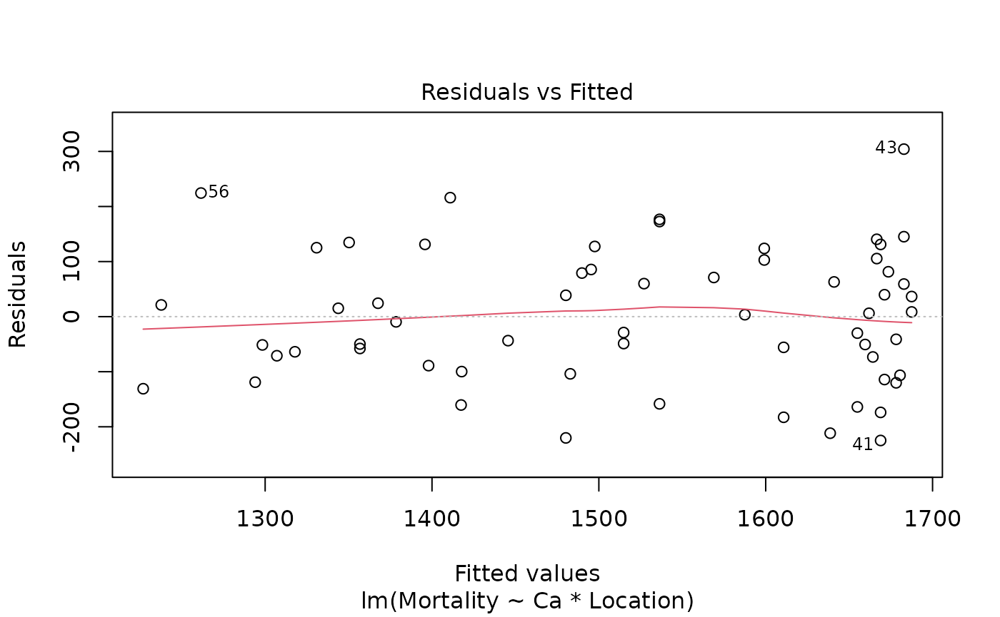
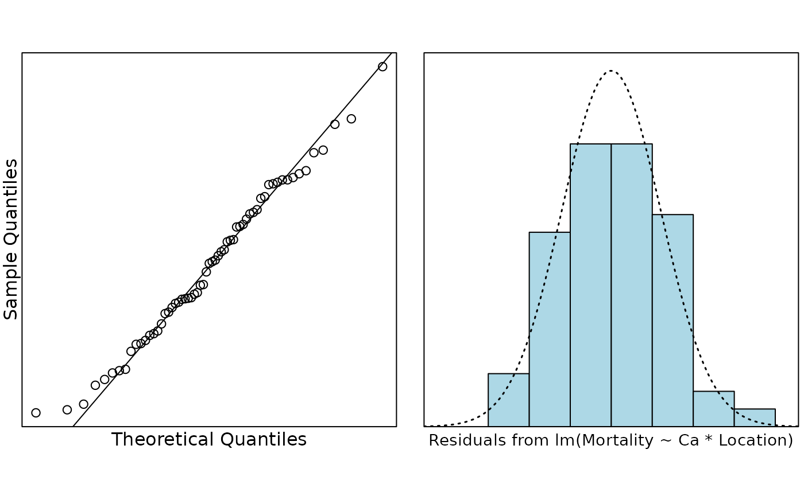
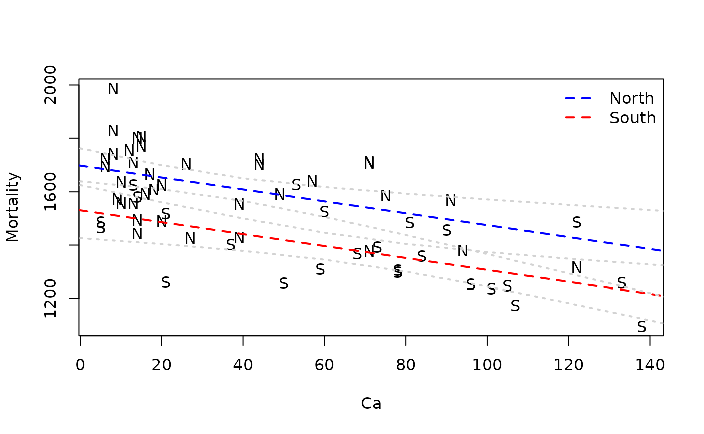

The data in this case study were collected in an investigation of
environmental causes of disease. They show the annual mortality rate per
100,000 for males, averaged over the years 1958–1964, and the calcium
concentration (in parts per million) in the drinking water supply for 61
large towns in England and Wales. (The higher the calcium concentration,
the harder the water.) Towns at least as far north as Derby are
identified in the data set with the code N. In this study
we will use R to investigate how are mortality and water hardness
related, and if there a geographical factor in the relationship. The
data is in the file water.csv on Canvas
## Mortality Ca Location
## 1 1247 105
## 2 1668 17 N
## 3 1466 5
## 4 1800 14 N
## 5 1609 18 N
## 6 1558 10 NIt’s always useful to check for missing values.
## [1] 0No missing values. All good. How about a plot? The ideal plot would
use Location as a plotting symbol, however we can see that
the towns to the South are coded as blanks. We should change that. How?
How about making all the values that are not N be
S?
water.df$Location[water.df$Location != 'N'] = 'S'Hmm. That did not work, as planned. That is because
Location is a factor. We have a number of choices. One is
to make a new variable. The other is to make Location a
character vector, make the change and, then make it a factor again.
Although this second option sounds like a lot of work it is really only
one line of code. It is preferable because we will not clutter our
workspace with redundant information.
water.df$Location = with(water.df, {
Location = as.character(Location);
Location[is.na(Location)] = 'S';
Location = factor(Location)
})
water.df$Location## [1] S N S N N N N S N S S S N S S N N N N S N N N N N S N S N S S S N N S S S N
## [39] S N N N N N S S N N N N N S N S S S N N N S N
## Levels: N SMuch better. Now how about that plot?
plot(Mortality ~ Ca, pch = as.character(water.df$Location), data = water.df)
normcheck(water.fit)
cooks20x(water.fit)All looks pretty good.
summary(water.fit)##
## Call:
## lm(formula = Mortality ~ Ca * Location, data = water.df)
##
## Residuals:
## Min 1Q Median 3Q Max
## -224.878 -88.953 3.495 85.617 304.172
##
## Coefficients:
## Estimate Std. Error t value Pr(>|t|)
## (Intercept) 1701.4272 30.9493 54.975 < 2e-16 ***
## Ca -2.3249 0.6996 -3.323 0.00156 **
## LocationS -175.7321 58.5586 -3.001 0.00399 **
## Ca:LocationS 0.1598 0.9460 0.169 0.86643
## ---
## Signif. codes: 0 '***' 0.001 '**' 0.01 '*' 0.05 '.' 0.1 ' ' 1
##
## Residual standard error: 123.9 on 57 degrees of freedom
## Multiple R-squared: 0.5857, Adjusted R-squared: 0.5639
## F-statistic: 26.86 on 3 and 57 DF, p-value: 5.855e-11It does not look like there is any evidence of different slopes. Do we get any additional info from the ANOVA table?
anova(water.fit)## Analysis of Variance Table
##
## Response: Mortality
## Df Sum Sq Mean Sq F value Pr(>F)
## Ca 1 906185 906185 59.0005 2.330e-10 ***
## Location 1 331091 331091 21.5569 2.065e-05 ***
## Ca:Location 1 438 438 0.0285 0.8664
## Residuals 57 875459 15359
## ---
## Signif. codes: 0 '***' 0.001 '**' 0.01 '*' 0.05 '.' 0.1 ' ' 1Nope. We only have two levels so we do not need the ANOVA table for this analysis.
So we do not have interaction, but it looks like there is a
relationship with hardness and it looks like there is a North/South
effect (Location). We should refit the model.
##
## Call:
## lm(formula = Mortality ~ Ca + Location, data = water.df)
##
## Residuals:
## Min 1Q Median 3Q Max
## -223.607 -89.582 2.091 83.303 306.353
##
## Coefficients:
## Estimate Std. Error t value Pr(>|t|)
## (Intercept) 1698.5472 25.6148 66.311 < 2e-16 ***
## Ca -2.2375 0.4669 -4.792 1.19e-05 ***
## LocationS -167.9518 35.8694 -4.682 1.75e-05 ***
## ---
## Signif. codes: 0 '***' 0.001 '**' 0.01 '*' 0.05 '.' 0.1 ' ' 1
##
## Residual standard error: 122.9 on 58 degrees of freedom
## Multiple R-squared: 0.5855, Adjusted R-squared: 0.5712
## F-statistic: 40.96 on 2 and 58 DF, p-value: 8.091e-12Minimal change in . How do the fitted lines look on the plot?
b = coef(water.fit2)
plot(Mortality ~ Ca, pch = as.character(water.df$Location), data = water.df)
abline(b[1:2], col = "blue", lty = 2, lwd = 2)
abline(b[1] + b[3], b[2], col = "red", lty = 2, lwd = 2)
legend("topright",
lty = 2, lwd = 2, col = c("blue", "red"),
legend = c("North", "South"), bty = "n"
)
# This code puts some confidence bounds around the lines.
# It's pretty complicated if you don't know R and it isn't examinable
pred.df = data.frame(
Ca = rep(seq(0, 160, by = 20), 2),
Location = rep(c('N', 'S'), c(9, 9))
)
water.pred = predict(water.fit, newdata = pred.df, interval = "confidence")
for (i in 1:2) {
idx = 1:9 + (i - 1) * 9
for (j in c("lwr", "upr")) {
lines(pred.df$Ca[idx], water.pred[idx, j], lty = 3, lwd = 2, col = "lightgrey");
}
}
So it looks like mortality decreases as the calcium concentration in the water increases, and that mortality is lower in the South than the North.